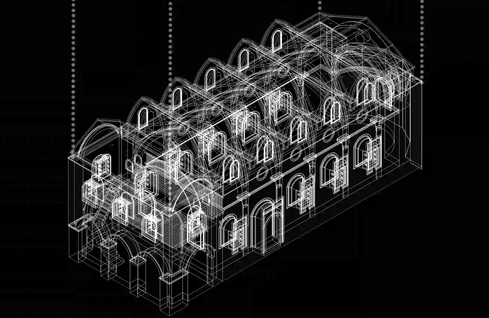
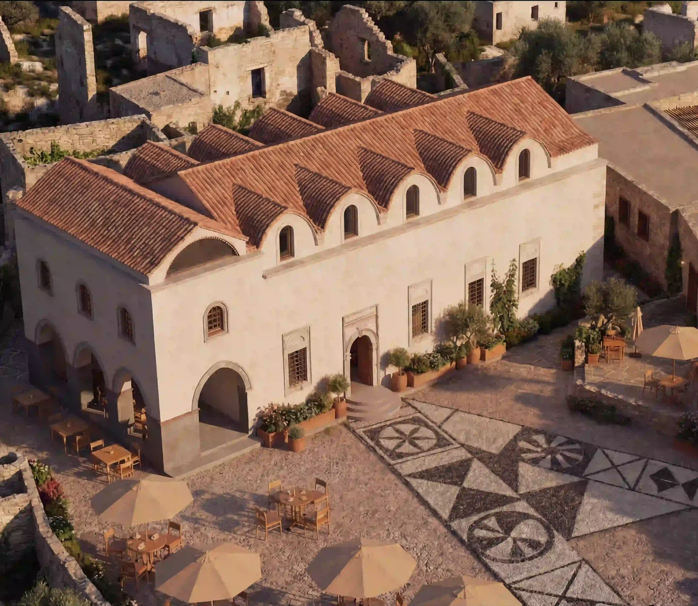
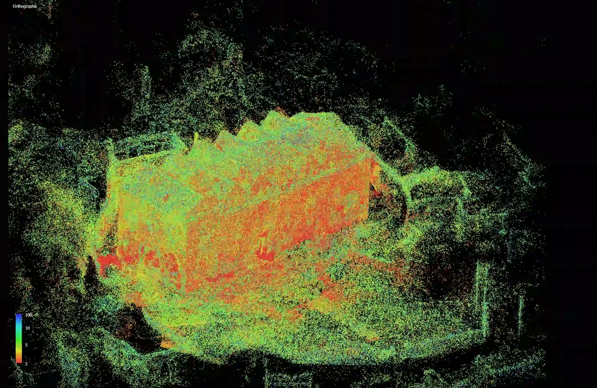
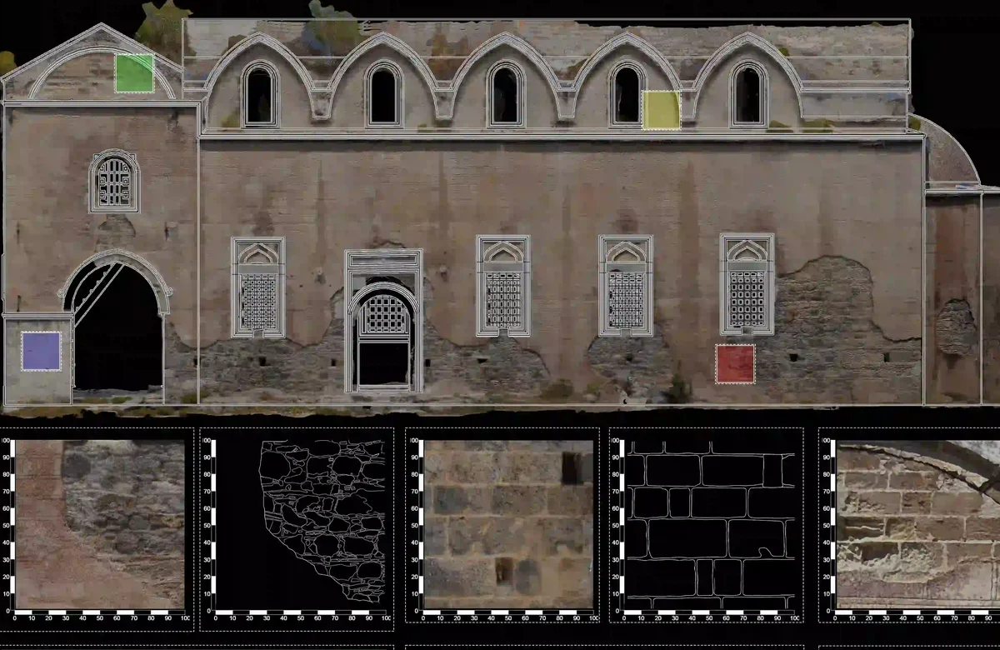

Revit BIM Modeling
Revit models built to your standards
Work in your Revit version and office template. Receive a model structured for the views, schedules and sheets your team needs to issue.
Remote BIM and drawing production for small architecture teams. Hand over a defined package and get coordinated files back in the formats your team uses.

Bring us in for a single drawing package or for extra production capacity across a project.
Editable Revit models, views and schedules built to your template and version.
Layered plans, sections and elevations from sketches, markups or existing files.
Existing-condition drawings from surveys and records, with gaps identified.
Architectural models from supplied point clouds, built to agreed tolerances.
Measured models and drawings for historic fabric, with survey limits recorded.
Assembly drawings, enlarged junctions and sheet packages developed from your design.
Interior and exterior stills for design reviews and presentations.
Images from Enes Bulgay’s master’s thesis · Kayaköy Upper Church

Revit BIM Modeling
Work in your Revit version and office template. Receive a model structured for the views, schedules and sheets your team needs to issue.

Scan-to-BIM
Supply E57, RCP or RCS data. We agree the model extent and tolerance up front and flag scan gaps that affect the agreed outputs.

HBIM & Heritage Documentation
Capture irregular geometry and significant features from your survey. Keep interpretation and areas of limited evidence visible in the model and drawings.
We agree file formats, versions and level of detail with you before production. Outputs vary by project.
Share your drawings, surveys or point clouds, and the deadline.
Agree the package, standards, milestones and fee.
Work progresses against the agreed inputs and template.
Review a draft, resolve markups and receive the final files.
We support teams that need extra production capacity or a reliable record of an existing building.
Share the brief, available files and target issue date. We can start with one clearly defined package.
highly skilled bim specialist, revit expert, and master architect with 8+ years of professional experience across italy, germany, turkey, and north macedonia. combining advanced expertise in autodesk revit, bim coordination, scan-to-bim, hbim (heritage bim), and parametric modeling with hands-on construction site experience — fluent in moving between architectural design, technical detailing, and on-site execution. specialized in clash detection (navisworks), custom revit family creation, shared parameters frameworks, schedules, and quantity take-off extraction directly from bim models, in line with icomos and iso 19650 standards.
master of science in architecture (restoration & conservation) graduate from sapienza university of rome with the highest distinction (110/110), with a thesis processing 512m-point photogrammetric datasets and producing lod 350+ parametric revit models. equally comfortable on the construction site as in the bim environment — extensive exposure to structural execution, contractor coordination, and translating design decisions into buildable reality. trilingual professional (turkish, english c2, italian) with proven ability to bridge multi-disciplinary teams across borders, deliver under deadlines, and rapidly master new tools and standards.
active italian residence permit (3+ years in rome, valid 2+ more years) · eligible for dutch zoekjaar visa as a sapienza graduate · prior long-stay experience in germany & north macedonia (erasmus+) · class b driving license (international permit)
for inquiries regarding bim coordination, parametric modeling, scan-to-bim, and architectural restoration consultation, please reach out via the channels below.
| muenstudio.office@gmail.com | |
| phone | +39 351 964 45 61 |
| linkedin.com/in/muzaffer-enes-bulgay | |
| location | rome, italy |
| work authorization | eu residence permit (italy) + eligible for dutch zoekjaar visa — open to relocation across the eu |
currently based in rome, italy with an active eu residence permit. eligible for dutch zoekjaar visa as a sapienza graduate. open to relocation across the european union.